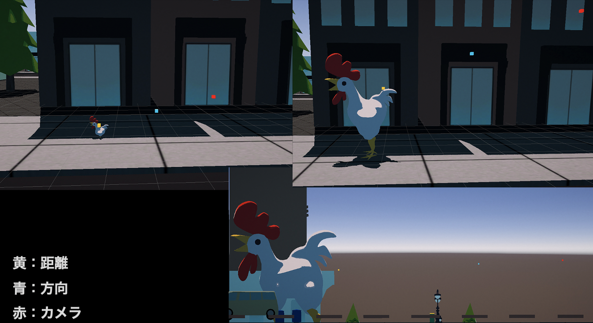

qq
Ryoki Kinoshita
Profile
東京工科大学 メディア学部
大学ではゲームにおけるコンテンツ表現（特にゲームサウンド）に力を入れて学んできました。「なにかを新しく生み出すこと」
が大好きで、プログラミング、効果音制作、作曲、グラフィックデザイン、映像、プロダクトデザインなどなど…様々なクリエイティブ活動に挑戦してきました。
現在はサウンドプログラミングやサラウンド環境の実装について学習しています。TGS2021に出展したゲームでは、それまでの経験を活かし、サウンドアセットの制作・サウンドミドルウェアを用いた実装を担当。シェーダーやグラフィックス パイプライン整備も担当(テクニカルアーティスト分野)しました。
ゲームをプレイすることが好きで、スマホタイトルも含め過去300作品ほどプレイしています。他にも、映画を年間200本程度観るなどコンテンツに貪欲に接しています。
Four Legs Chicken
tools
ADX2LE, Unity, ProTools, StudioOne
製作期間
1年(チーム制作)
サウンドアセット制作(総数200程度)、ADX2、Unityを用いた実装を担当しました。
ニワトリで街を破壊する3Dアクションゲームです。
東京ゲームショウ2021にオンライン出展しました。
オーディオリスナーの、距離センサーと方向センサーを分離し、更に可変にすることで、徐々に巨大化するプレイヤーの音の違和感を防ぐ実装を行いました。

また、周囲のオブジェクトを計算したインタラクティブリバーブを一部実装しています。
飛行時の高度によって、街中のベースノイズと空中の風音のミックスバランスを変化させる実装を行いました。
飛行時の高度によって、街中のベースノイズと空中の風音のミックスバランスを変化させる実装を行いました。
紹介したのはほんの一部ですが、このようなチャレンジングな実装を多数行っています。
CRIWAREインタビュー
ADX LEユーザーインタビュー Vol.6『Four Legs Chicken』編
ADX2 LEを用いた作品について、 インタビュー記事をCRIWARE公式ブログに掲載していただきました。
ハンドトラッキングを用いたインタラクティブミュージック
tools
LeapMotion, ADX2LE, Unity, ProTools
製作期間
1ヶ月
ハンドトラッキングが可能なLeap Motionを使用し、手の動きによって音楽の音量、再生ブロック指示、楽器の増減を行えるようにしました。
音楽の指揮をデジタルなインタラクティブコンテンツしてみたいという考えから制作しました。 手の上下頻度によるBPMの制御にも挑戦しましたが、現状実装出来ておらず今後の課題です。
音楽の指揮をデジタルなインタラクティブコンテンツしてみたいという考えから制作しました。 手の上下頻度によるBPMの制御にも挑戦しましたが、現状実装出来ておらず今後の課題です。
ケモの足跡
tools
Unity, StudioOne, PhotoShop, illustrator
製作期間
3ヶ月(チーム制作)
企画原案、サウンドアセット制作、グラフィックアセット制作、Unityを用いた実装を行いました。
ナマケモノを直接操作すること無く、シール（ギミック）で輸送するゲームです。
ビジュアルと音をすべて担当したため、世界観の構築に苦労しましたが、最後まで完成させ、コンテストに応募するクオリティにまでできました。
ナマケモノを直接操作すること無く、シール（ギミック）で輸送するゲームです。
ビジュアルと音をすべて担当したため、世界観の構築に苦労しましたが、最後まで完成させ、コンテストに応募するクオリティにまでできました。
その他
2019年度 学部長賞 受賞
2019年度 メディアエキスパート賞 受賞
2020年度 メディアエキスパート賞 受賞
2019年度 メディアエキスパート賞 受賞
2020年度 メディアエキスパート賞 受賞
東京工科大学ゲームプロジェクト 公式ロゴ作成
某芸能事務所所属シンガーソングライター
ミュージックビデオのグラフィック作成、映像編集を担当
インディーズ映画主題歌起用曲
ミュージックビデオのグラフィック作成、映像編集を担当